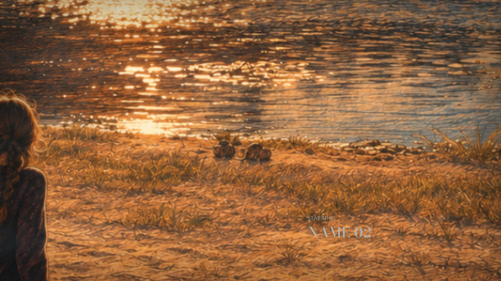
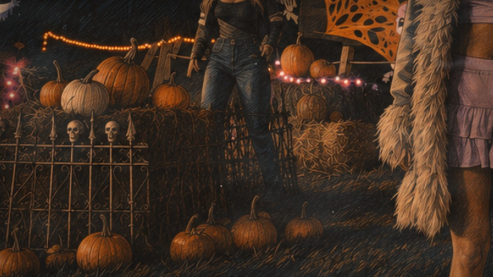
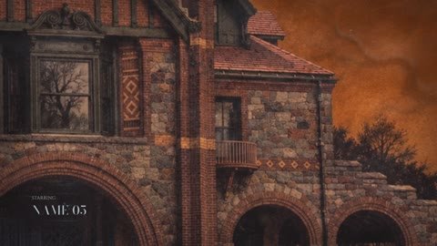
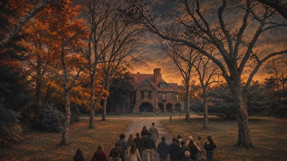
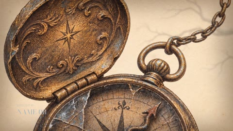
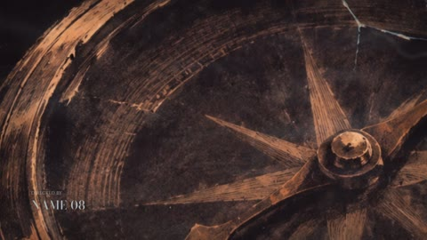

S005 00:14:03DETAIL 04 - key to her eyesEditable picture — swap in AEChoose replacement for S005
S010 00:25:09DETAIL 08 - face to candle reflectionsEditable picture — swap in AEChoose replacement for S010
S017 00:35:14DETAIL 13 - arched entrance to upper windowEditable picture — swap in AEChoose replacement for S017
S026 00:55:1522 - 07 dailies arrivalEditable picture — swap in AEChoose replacement for S026
S028 00:59:1124 - compass vintageEditable picture — swap in AEChoose replacement for S028
S030 01:01:14DETAIL 25 - compass face to winding crownEditable picture — swap in AEChoose replacement for S030